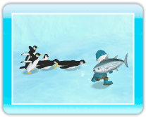

14 |
Utiliser les objets |
 |
Pour utiliser un objet, pointez sur son icône dans le coin situé en bas, à gauche de l’écran et appuyez sur Note : Rangez un objet en appuyant sur Baguettes de pêcheur 
Les baguettes de pêcheur vous indiqueront où les poissons se cachent sous la glace et la neige. Si vous avancez en tenant les baguettes de pêcheur, elles s’ouvriront quand vous trouverez un endroit propice à la pêche. ・Pêcher 
Lorsque les baguettes de pêcheur s’ouvrent, appuyez sur Poisson-globe 
C’est un petit poisson tout rond qui se transforme en boule de neige quand vous le lancez en appuyant sur 
・Rouler une boule de neige Quand vous lancez un poisson-globe, il se roulera en boule de neige. En vous plaçant à côté de la boule et en maintenant Notes : - Les boules de neige se brisent lorsqu’elles heurtent un obstacle. Le pingouin d’or 
C’est une statue de pingouin en or. Après l’avoir sélectionnée avec le pointeur, appuyez sur Note : Pour retirer le pingouin d’or, placez-vous à côté et appuyez sur Thon Le thon est une friandise pour les pingouins. Quand ils en aperçoivent un, ils se précipitent dessus pour le dévorer! |
 |
 |
 |